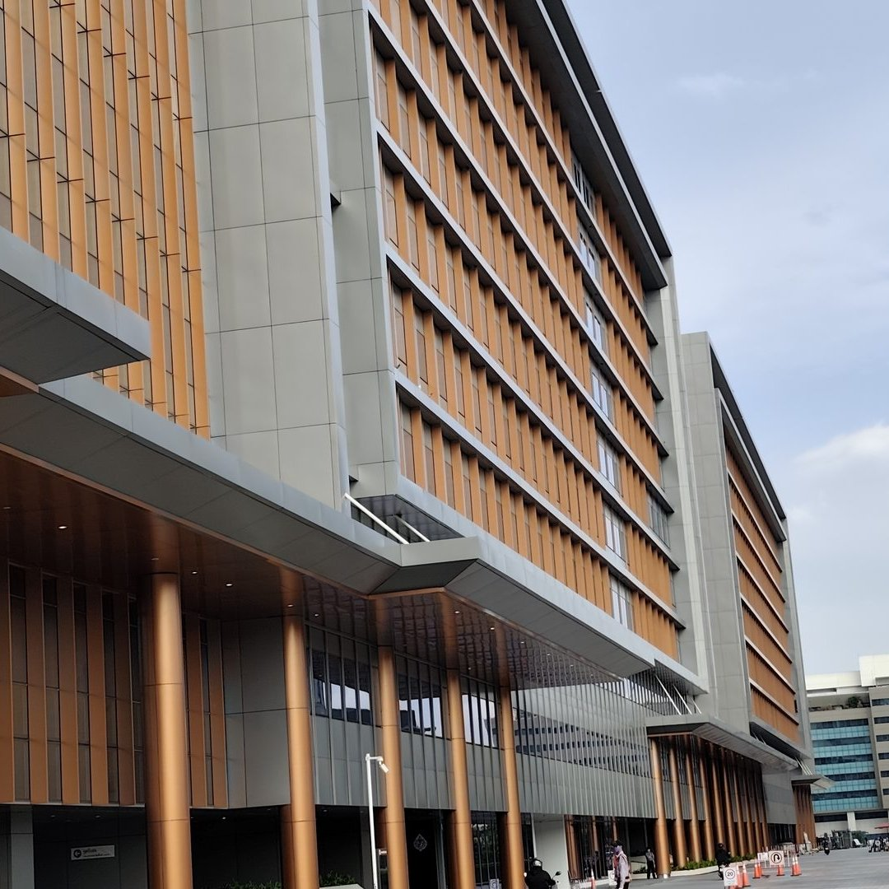
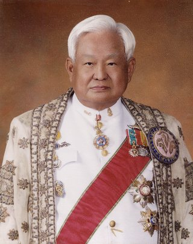

๒๔๖๙๑๙ เมษายน
ก่อตั้ง “ราชบัณฑิตยสภา”
พระบาทสมเด็จพระปกเกล้าเจ้าอยู่หัว รัชกาลที่ ๗ ทรงพระกรุณาโปรดเกล้าฯ ประกาศให้จัดตั้ง เพื่อฟื้นฟูกิจการของกรมราชบัณฑิตย์ ซึ่งมีมาแต่โบราณและเป็นตำแหน่งสำหรับทรงตั้งผู้มีความรู้ไว้รับราชการ
๑๐๐ ปี ราชบัณฑิตยสภา · พ.ศ. 2469–2569
หนึ่งศตวรรษแห่งการบำรุงสรรพวิชาและภาษาไทย
วันสถาปนา
๑๙เมษายนพ.ศ. ๒๔๖๙
พระบาทสมเด็จพระปกเกล้าเจ้าอยู่หัว รัชกาลที่ ๗ ทรงพระกรุณาโปรดเกล้าฯ ประกาศให้จัดตั้ง “ราชบัณฑิตยสภา” ขึ้น เพื่อฟื้นฟูกิจการของกรมราชบัณฑิตย์ ซึ่งมีมาแต่โบราณและเป็นตำแหน่งสำหรับทรงตั้งผู้มีความรู้ศาสตราคมไว้รับราชการ
ลำดับเหตุการณ์ · ๒๔๖๙–๒๕๖๙
ชื่อที่ทรงพระราชทาน ชื่อใหม่ที่ใช้ยาวนาน ๘๒ ปี และการกลับคืนสู่ชื่อเดิม หนึ่งศตวรรษในสามยุค
ยุคที่ ๑
พ.ศ. ๒๔๖๙–๒๔๗๖ · สถาปนาโดยพระบาทสมเด็จพระปกเกล้าเจ้าอยู่หัว
๒๔๖๙๑๙ เมษายน
พระบาทสมเด็จพระปกเกล้าเจ้าอยู่หัว รัชกาลที่ ๗ ทรงพระกรุณาโปรดเกล้าฯ ประกาศให้จัดตั้ง เพื่อฟื้นฟูกิจการของกรมราชบัณฑิตย์ ซึ่งมีมาแต่โบราณและเป็นตำแหน่งสำหรับทรงตั้งผู้มีความรู้ไว้รับราชการ
ยุคที่ ๒
พ.ศ. ๒๔๗๖–๒๕๕๘ · ตามพระราชบัญญัติว่าด้วยราชบัณฑิตยสถาน
๒๔๗๖
ตามคำปรึกษาของสภาผู้แทนราษฎร ให้จัดตั้งราชบัณฑิตยสถาน เพื่อค้นคว้าหาความรู้นำมาเผยแพร่แก่ประชาชนและสร้างตำรับตำราให้แพร่หลาย
๒๔๗๗๑๖ มิถุนายน
ปีเดียวกันเริ่มการประกวดแต่งหนังสือสอนพระพุทธศาสนาแก่เด็กประจำปี และรับโอนงานชำระปทานุกรมจากกระทรวงธรรมการ
๒๔๘๕๓๐ กันยายน
มีพระบรมราชโองการแต่งตั้ง ภายหลังการออกพระราชบัญญัติว่าด้วยราชบัณฑิตยสถาน พุทธศักราช ๒๔๘๕

๒๕๔๙
ที่ตั้งของสำนักงานราชบัณฑิตยสภาจนถึงปัจจุบัน หลังจากใช้อาคารราชวัลลภในพระบรมมหาราชวังมาตั้งแต่ พ.ศ. ๒๕๓๑
๒๕๕๖
สภาราชบัณฑิตเห็นสมควรใช้ชื่อที่พระบาทสมเด็จพระปกเกล้าเจ้าอยู่หัวทรงสถาปนา เพื่อเฉลิมพระเกียรติในโอกาส ๑๒๐ ปี พระบรมราชสมภพ
ยุคที่ ๓
พ.ศ. ๒๕๕๘–ปัจจุบัน · ตามพระราชบัญญัติราชบัณฑิตยสภา พ.ศ. ๒๕๕๘
๒๕๕๘๑๔ กุมภาพันธ์
“ราชบัณฑิตยสถาน” เปลี่ยนเป็น “สำนักงานราชบัณฑิตยสภา” และ “สภาราชบัณฑิต” เปลี่ยนเป็น “ราชบัณฑิตยสภา” ซึ่งมีนายกราชบัณฑิตยสภาเป็นนายกสภา

๒๕๖๙๑๙ เมษายน
หนึ่งศตวรรษนับแต่วันสถาปนา ในการบำรุงสรรพวิชาและภาษาไทย
ที่ทำการ
ย้ายมาแล้วสามครั้ง จากวังบางขุนพรหมถึงสนามเสือป่า
แห่งแรก
ตำหนักสมเด็จชั้นบน
ถึง พ.ศ. ๒๕๓๑
ถนนหน้าพระธาตุ อาคารหอสมุดวชิราวุธด้านทิศเหนือ
พ.ศ. ๒๕๓๑–๒๕๔๙
ในพระบรมมหาราชวัง
พ.ศ. ๒๕๔๙–ปัจจุบัน
เขตดุสิต กรุงเทพมหานคร
เมื่อวันที่ ๑๙ เมษายน พ.ศ. ๒๔๖๙ พระบาทสมเด็จพระปรมินทรมหาประชาธิปก พระปกเกล้าเจ้าอยู่หัว รัชกาลที่ ๗ แห่งราชวงศ์จักรีได้ทรงพระกรุณาโปรดเกล้าฯ ประกาศให้จัดตั้ง “ราชบัณฑิตยสภา” ขึ้น ทรงเห็นสมควรฟื้นฟูกิจการของ กรมราชบัณฑิตย์ ซึ่งมีมาแต่โบราณและเป็นตำแหน่งสำหรับทรงตั้งผู้มีความรู้ศาสตราคมไว้รับราชการ ต่อมาเมื่อ พ.ศ. ๒๔๗๖ สภาผู้แทนราษฎร ได้ถวายคำปรึกษาแด่พระบาทสมเด็จพระปกเกล้าเจ้าอยู่หัว สมควรจัดตั้งราชบัณฑิตยสถานให้มีสมาชิกผู้ประกอบด้วยคุณวิชา สมควรจะได้เลือกตั้งเป็นราชบัณฑิตในภายหน้าเพื่อกระทำการค้นคว้าหาความรู้นำมาเผยแพร่แก่ประชาชนและสร้างตำรับตำราให้แพร่หลายต่อไปจึงทรงพระกรุณาโปรดเกล้าฯ ให้ตรา พระราชบัญญัติว่าด้วยราชบัณฑิตยสถาน ขึ้นเมื่อ พ.ศ. ๒๔๗๖ และให้ยกเลิกประกาศตั้งราชบัณฑิตยสภา ฉบับลงวันที่ ๑๙ เมษายน พ.ศ. ๒๔๖๙
เริ่มแรกที่ตั้งราชบัณฑิตยสถานนั้น ยังไม่มีราชบัณฑิต มีแต่ภาคีสมาชิก ซึ่งจัดการประชุมครั้งแรกขึ้น ณ ในพระบรมมหาราชวัง เมื่อวันที่ ๑๖ มิถุนายน พุทธศักราช ๒๔๗๗ ภายหลังมีการออกพระราชบัญญัติว่าด้วยราชบัณฑิตยสถาน พุทธศักราช ๒๔๘๕ และมีพระบรมราชโองการแต่งตั้งราชบัณฑิตเป็นครั้งแรก เมื่อวันที่ ๓๐ กันยายน พุทธศักราช ๒๔๘๕ จำนวน ๕๑ คน
งานสำคัญในช่วงแรกเกิดจากพระราชดำริในพระบาทสมเด็จพระปกเกล้าเจ้าอยู่หัว คือ การประกวดแต่งหนังสือสอนพระพุทธศาสนาแก่เด็กประจำปี ที่ราชบัณฑิตยสถานดำเนินการสืบเนื่องมาตั้งแต่พุทธศักราช ๒๔๗๗ จนถึงปัจจุบัน นอกจากนี้ ยังมีงานหลักอีก ๕ งาน ได้แก่ งานชำระพจนานุกรม ซึ่งเดิมคืองานชำระปทานุกรมที่รับโอนจากกระทรวงธรรมการมาตั้งแต่พุทธศักราช ๒๔๗๗ งานสารานุกรม งานบัญญัติศัพท์ภาษาไทย งานอักขรานุกรมภูมิศาสตร์ และงานจัดทำหลักเกณฑ์การถอดอักษรไทยเป็นอักษรโรมัน
ที่ทำการของราชบัณฑิตยสถานแรกเริ่มได้ใช้ตำหนักสมเด็จชั้นบน ณ วังบางขุนพรหม ต่อมาย้ายไปอยู่ที่ตึกถาวรวัตถุ หรืออาคารหอสมุดวชิราวุธด้านทิศเหนือ ถนนหน้าพระธาตุ จนถึงพุทธศักราช ๒๕๓๑ จากนั้นย้ายไปใช้อาคารราชวัลลภ ในพระบรมมหาราชวัง จนถึงพุทธศักราช ๒๕๔๙ ได้ย้ายมาอยู่ที่สนามเสือป่า เขตดุสิต กรุงเทพมหานคร จนถึงปัจจุบัน
การดำเนินงานของราชบัณฑิตยสถาน แบ่งเป็น ๒ ส่วน คือ ส่วนสภาราชบัณฑิตและส่วนข้าราชการประจำ
สภาราชบัณฑิตทำหน้าที่วางนโยบายในการดำเนินงานด้านวิชาการ ประกอบด้วยกรรมการสภา ซึ่งเป็นราชบัณฑิตจาก ๓ สำนัก ได้แก่ สำนักธรรมศาสตร์และการเมือง สำนักวิทยาศาสตร์ และสำนักศิลปกรรม มีนายกราชบัณฑิตยสถาน เป็นนายกสภา อุปนายกราชบัณฑิตยสถานเป็นอุปนายกสภา มีเลขาธิการราชบัณฑิตยสถานทำหน้าที่เลขานุการสภา และรองเลขาธิการราชบัณฑิตยสถานทำหน้าที่ผู้ช่วยเลขานุการสภา
ส่วนข้าราชการประจำ มีเลขาธิการราชบัณฑิตยสถาน เป็นหัวหน้าส่วนราชการ และมีรองเลขาธิการราชบัณฑิตยสถาน ช่วยปฏิบัติราชการ กำกับดูแลการปฏิบัติงานด้านวิชาการและงานธุรการของสำนักงานเลขานุการกรม กองธรรมศาสตร์และการเมือง กองวิทยาศาสตร์ และกองศิลปกรรม รวมทั้งประสานการดำเนินงานกับทุกสำนัก
การดำเนินงานด้านวิชาการ ดำเนินงานในรูปของคณะกรรมการวิชาการ เพื่อจัดประชุมพิจารณาศัพท์ บัญญัติศัพท์ จัดทำคำอธิบายศัพท์ในสาขาวิชาต่าง ๆ ตลอดจนกำหนดหลักเกณฑ์ทางภาษา แล้วนำผลงานซึ่งเป็นองค์ความรู้เผยแพร่สู่ประชาชนในช่องต่าง ๆ ทั้งสื่อสิ่งพิมพ์ วิทยุ โทรทัศน์ สื่ออิเล็กทรอนิกส์ เพื่อให้เข้าถึงความต้องการของประชาชนได้อย่างกว้างขวาง และมีการรับฟังความความคิดเห็น เพื่อนำมาปรับปรุงการให้การบริการให้มีประสิทธิภาพยิ่งขึ้น
ราชบัณฑิตยสถานได้ดำเนินงานตามพันธกิจในการศึกษา ค้นคว้า วิจัย และบำรุงสรรพวิชามาอย่างต่อเนื่อง ผลงานทางวิชาการของราชบัณฑิตยสถานซึ่งเป็นที่รู้จักและใช้เป็นแหล่งอ้างอิงและเป็นมาตรฐานในการเขียนหนังสือไทย ทั้งหนังสือราชการและในการศึกษาเล่าเรียน ให้เป็นระเบียบเดียวกัน คือ พจนานุกรม ฉบับราชบัณฑิตยสถาน
ในปี ๒๕๕๖ ราชบัณฑิตยสภาโดยสภาราชบัณฑิตเห็นเป็นการสมควรเปลี่ยนชื่อ “ราชบัณฑิตยสถาน” เป็น “ราชบัณฑิตยสภา” อันเป็นชื่อเดิมที่พระบาทสมเด็จพระปกเกล้าเจ้าอยู่หัวได้ทรงสถาปนาขึ้นเมื่อวันที่ ๑๙ เมษายน พ.ศ. ๒๔๖๙ เพื่อเฉลิมพระเกียรติในโอกาส ๑๒๐ ปี พระบรมราชสมภพ รวมทั้งปรับปรุงอำนาจหน้าที่และการบริหารงานวิชาการของราชบัณฑิตยสภาให้แพร่หลายแก่วงวิชาการของประเทศและประชาชนทั่วไปมากขึ้น ประกอบกับให้มีการจัดตั้งกองทุนสวัสดิการสมาชิกราชบัณฑิตยสภาเพื่อเป็นประโยชน์แก่สมาชิกราชบัณฑิตยสภา และกำหนดให้รายได้ที่ราชบัณฑิตยสภาได้รับจากการบริหารทางด้านวิชาการและการจัดการศึกษาอบรมสามารถนำไปจ่ายในการดำเนินการตามอำนาจหน้าที่ของสำนักงานราชบัณฑิตยสภาโดยไม่ต้องนำส่งคลังเป็นรายได้แผ่นดิน เพื่อให้มีความคล่องตัวในการบริหารงานวิชาการมากขึ้น
ในปี ๒๕๕๘ พระบาทสมเด็จพระเจ้าอยู่หัวได้มีพระบรมราชโองการโปรดเกล้าโปรดกระหม่อมให้ประกาศว่าเป็นการสมควรปรับปรุงกฎหมายว่าด้วยราชบัณฑิตยสถาน และทรงพระกรุณาโปรดเกล้าโปรดกระหม่อมให้ตราพระราชบัญญัติราชบัณฑิตยสภา พ.ศ. ๒๕๕๘ ซึ่งได้ประกาศลงในราชกิจจานุเบกษา เล่ม ๑๓๒ ตอนที่ ๑๐ ก ลงวันที่ ๑๓ กุมภาพันธ์ ๒๕๕๘ และมีผลบังคับใช้ตั้งแต่วันที่ ๑๔ กุมภาพันธ์ พ.ศ. ๒๕๕๘ เป็นต้นไป ชื่อหน่วยงาน “ราชบัณฑิตยสถาน” จึงเปลี่ยนเป็น “สำนักงานราชบัณฑิตยสภา” และ “สภาราชบัณฑิต” จึงเปลี่ยนเป็น “ราชบัณฑิตยสภา”